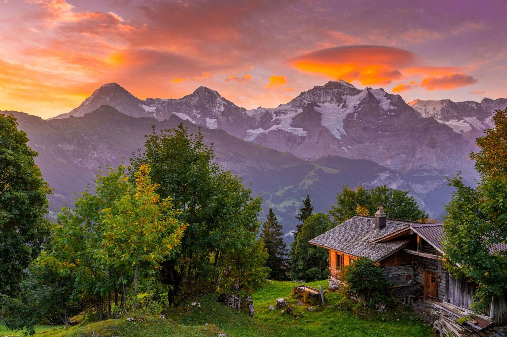
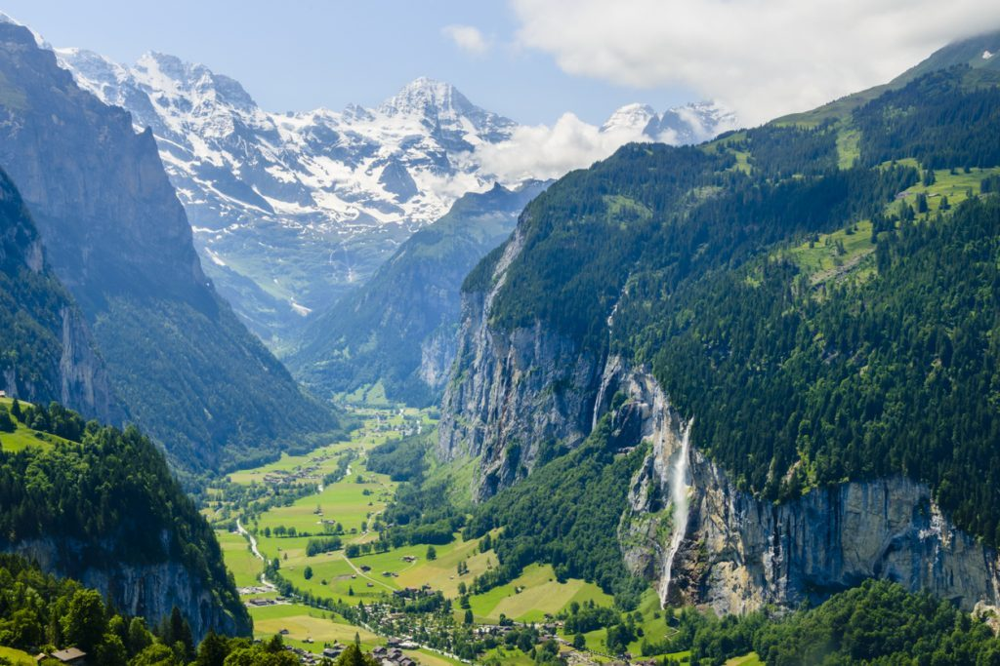
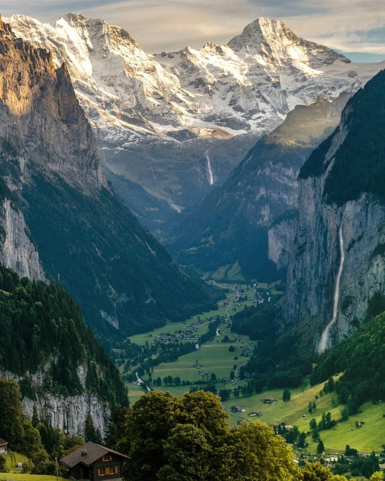
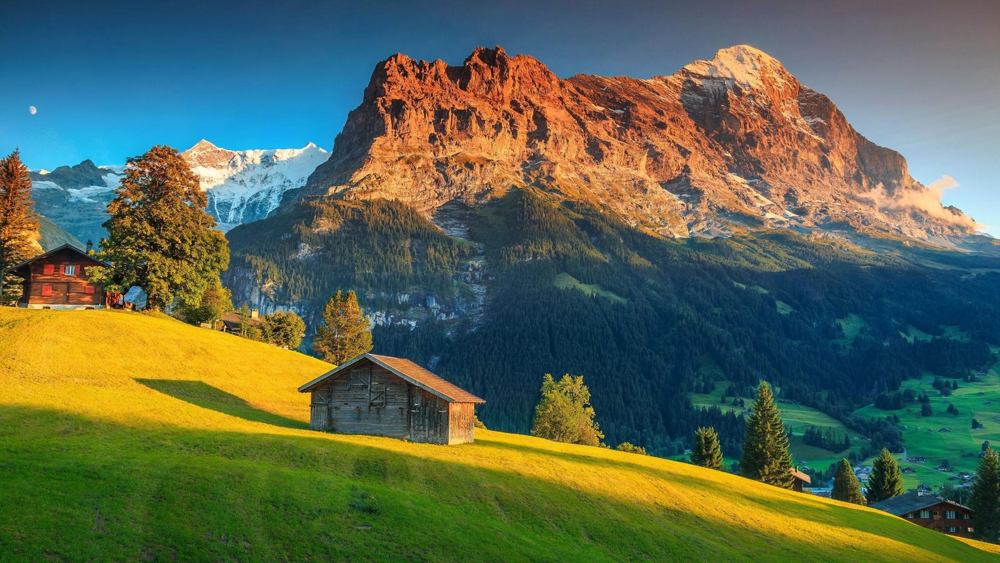
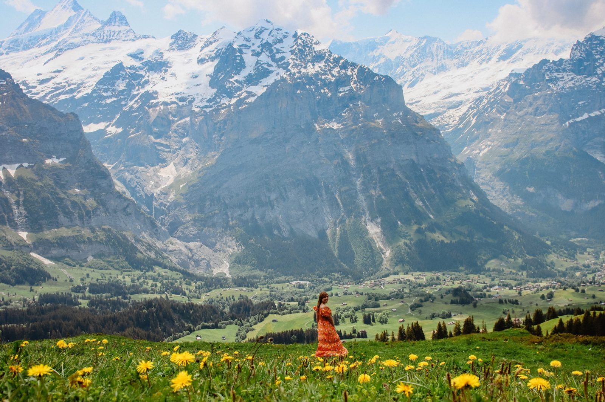

Interlaken + Lauterbrunnen
El corazón de los Alpes berneses: dos lagos turquesa, un valle con 72 cascadas y las cumbres del Eiger, el Mönch y el Jungfrau.
Interlaken —literalmente «entre lagos», el de Thun y el de Brienz— creció alrededor de un monasterio agustino fundado hacia 1130. Su gran momento llegó en el siglo XIX, cuando los viajeros del Romanticismo, deslumbrados por la pared del Jungfrau, la convirtieron en una de las primeras estaciones turísticas de los Alpes; en 1912 el ferrocarril del Jungfrau alcanzó la estación de tren más alta de Europa.
El vecino valle de Lauterbrunnen («muchas fuentes») es pura leyenda: sus paredes verticales y sus cascadas colgantes inspiraron a Goethe un poema sobre la cascada del Staubbach en 1779 y, según la tradición, sirvieron de modelo a Tolkien para imaginar el Rivendel de El Señor de los Anillos.
Qué ver
El paseo llano del Höheweg en Interlaken, con vistas al Jungfrau, y sobre todo el fondo del valle de Lauterbrunnen, con la cascada del Staubbach descolgándose casi 300 m junto al pueblo. Grindelwald, al lado, completa el paisaje.




